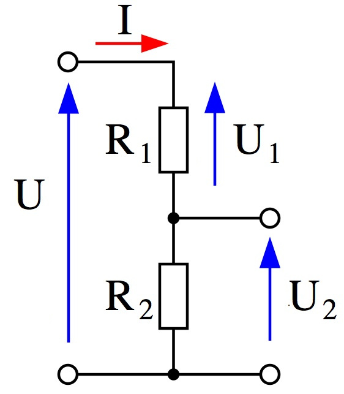

Temperature sensor TMP36

Installing Johnny Five
// package.json
{
"dependencies": {
"johnny-five": "latest"
}
}
npm install
Displaying temperature
var five = require('johnny-five');
var board = new five.Board();
var temperatureSensor;
board.on('ready', function() {
temperatureSensor = new five.Sensor({ pin: 'A0', freq: 1000 });
temperatureSensor.on('data', function() {
console.log(getTemperature() + "°C");
});
});
function getTemperature() {
var out = temperatureSensor.value * (5 / 1023);
return Math.round(out * 100 – 50);
}
Smoothing output

- Very low intensity
- Very sensitive to electro-magnetic noise
- Too long wires => unstable output
- Smoothing output with capacitors
Photoresistor SEN-09088

- Datasheet : SEN-09088
- Non linear resistance
- Calibration required
|
Light |
Resistance |
| Darkness |
1 Lux |
1.4 MΩ |
| Rainy day |
1 100 Lux |
850 Ω |
| Torch light |
8 000 Lux |
200 Ω |
| Sunny day |
30 000 Lux |
120 Ω |
Voltage divider bridge

Ohm's law:
$U = R * I$
Mesh method:
$U = U_{1} + U_{2}$
Voltage divider:
$U_{2} = U * \frac{R_{2}}{R_{2} + R_{1}}$
$R_{2} = \frac{U_{2} * R_{1}}{(U - U_{2})}$
Displaying light
var VOLTAGE = 5;
var LIGHT_DIVIDER_RESISTANCE = 10;
board.on('ready', function() {
lightSensor = new five.Sensor('A1');
lightSensor.scale([0, 1023]);
lightSensor.on('data', function() {
console.log(getLightResistance() + '%');
});
});
function getLightResistance() {
var r = lightSensor.value * LIGHT_DIVIDER_RESISTANCE;
r /= (VOLTAGE – lightSensor.value);
return r;
}
Humidity sensor à la MacGyver

- Voltage proportional to humidity
- Calibration required: dry and wet soil
- Zinc-coated or stainless steel wire
- Compost = chemical reactor
Displaying humidity rate
var HUMIDITY_DRY_RESISTANCE = 150;
var HUMIDITY_WET_RESISTANCE = 10;
var HUMIDITY_DIVIDER_RESISTANCE = 10;
board.on('ready', function() {
humiditySensor = new five.Sensor({ pin: 'A2', frequency: 2000 });
humiditySensor.scale([0, VOLTAGE]);
humiditySensor.on('data', function() {
console.log(getHumidity() + '%');
});
});
function getHumidity() {
var resistance = humiditySensor.value * HUMIDITY_DIVIDER_RESISTANCE / (VOLTAGE - humiditySensor.value);
var humidityRate = 100 * (HUMIDITY_DRY_RESISTANCE - resistance) / (HUMIDITY_DRY_RESISTANCE - HUMIDITY_WET_RESISTANCE);
return Math.round(humidityRate);
}
Installing socket.io
// package.json
{
"dependencies": {
// ...
"socket.io": "latest"
}
}
npm install
Socket.io: server side
var io = require('socket.io').listen(8080);
board.on('ready', function() {
io.sockets.on('connection', function(socket) {
console.log('New connection: ' + socket.id);
tempSensor.on('data', function() {
socket.emit('temp', getTemperature());
});
});
});
Socket.io: client side
<script src="//:8080/socket.io/socket.io.js">
</script>
var socket = io.connect("//:8080");
socket.on("temp", function (value) {
$(".temperature .value").text(value + "°C");
});